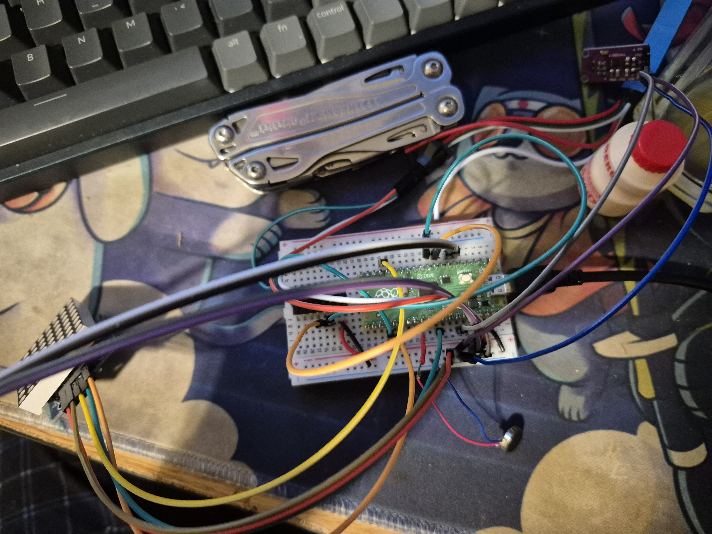
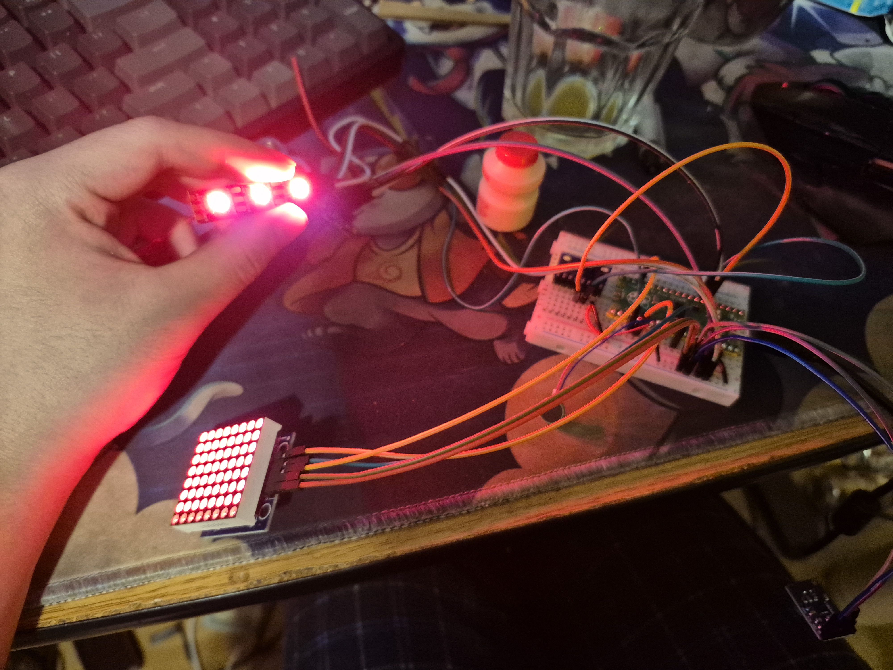

above is checking the wiring and configuration

All the parts work and have been tested in a combined code
The enclosure is wrapped with paper that allowed me to pain texture on it to be more rock like in appearence and so it wouldn't be a boring flat color but with texture. There are many gaps open to allow light from inside the enclosure to seep out giving it a nice glowing effect in the dark.
this tests the accelerometer and the function of when the heart will reappear onto the matrix when undisturbed
There is a vibrating motor when the rock is lifted too high using a VL6180X. Once lifted too high it will turn on a vibrating motor and turn off the matrix.
There is a microphone that when it's too loud, demonstrated by tapping directly on the microphone, will also turn off the matrix. There is also a speaker that plays a low humming sound when the rock is undisturbed to attract people and will turn off once disturbed.
this tests the how sensitive the accelerometer is.
This project that I call The Isolated Rock is a self reflection of this semester. Due to unforseen events and in general things happen I have felt very alone and I personally have a hard time reaching out for help. The rock is a self personification using the knowledge I learned in this class to represent my ideas. As I have been unable to attend most of class this semester, it left me feeling isolated and very eaisly aggitated and affected by my surroundings. The heart on the matrix represents my HP like in video games. As nothing was happening I was healing but if something were to happen it would turn off. This is represented by three components. When shuffled around it would turn off and that was to represent life just hitting me around. When it's too loud represents hearing bad news making me reset. When picked up is in a way me trying to pick myself up but feeling huge amount of doubts and wanting to go back to a safe place. Ultimately despite these things happening the heart will come back and its a more optimistic view on life. No matter what i'll have heart and heal but sometimes I just need time and not to be tussled. There is also a way to pick up this rock without activating it by cradling it blocking off the range finder and making sure to be gentle. I think everyone has their own pace and ways of coping and this is my representation of coping.
{kind=link}
{kind=link}
{kind=link}
{kind=link}
{kind=link}
{kind=link}